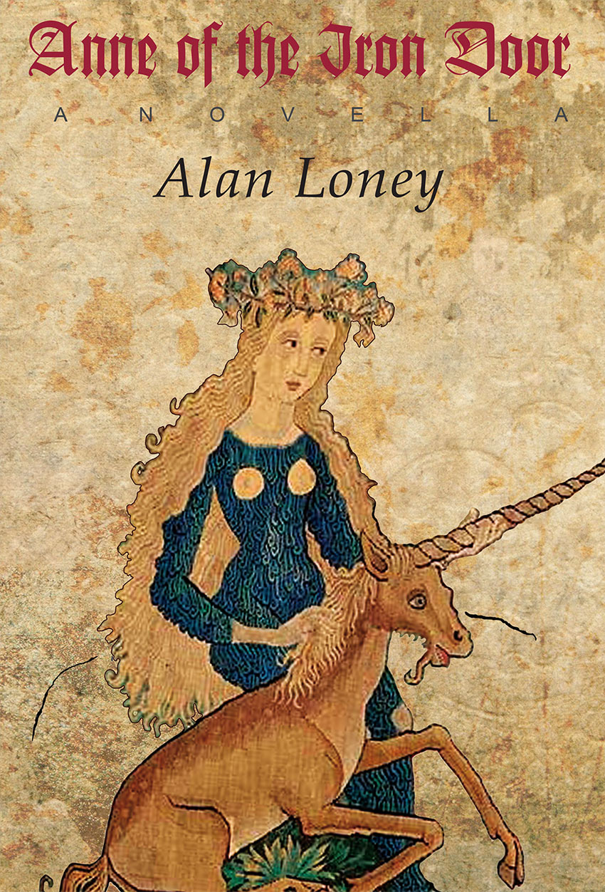
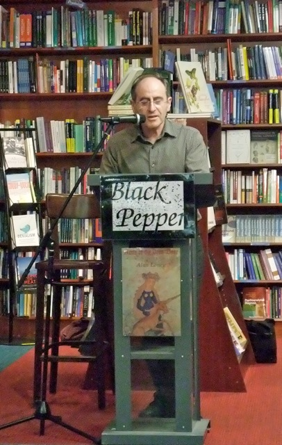

 Anne of the Iron Door A NOVELLAAlan Loney I have seen a Gutenberg Bible at the British Library, but it’s only now - having read this work of invention that keeps reminding me that it’s not true - that I feel as if I know the man - and the brave, honourable woman who loved him. The iron door that slams shut on the love of Enne and Johann is cruel indeed yet this is a playful book, playing with prose and poetry, and patterns and pictures. The engravings are charming, and add to the cunning symbolism. Lisa Hill, ANZ LitLovers LitBlog |
| Down to Book Description Book Sample |
Book Reviews ANZ LitLovers LitBlog The Launceston Examiner |
Launch
Speech by Alex Skovron |
Loney biography | Next title Previous title Home page All publications |
|

In the city of
Strasbourg in 1436, a woman sued the father of printing,
Johann Gutenberg, for breach of promise. Her name was Ennelin zu der
Iserin Tur, in English, Anne of the Iron Door. The outcome of the court
case is not known, but it is known that Gutenberg never married, and he
did pay taxes for ‘another person’ in Strasbourg sometime before 1440.
Not much is known of Gutenberg the man, although a number of official
documents still exist that mention him.
Of Anne we know practically nothing beyond her remarkable name. In Alan Loney’s extraordinary fable he uses the historical records to weave a fictional life for Anne, almost purely for the purpose of keeping her name alive. In Anne of the Iron Door Loney creates a world of deceit and betrayal, disease, unicorns, playing cards, the birth of printing, and a strange tale of mutually unrequited love.
Of Anne we know practically nothing beyond her remarkable name. In Alan Loney’s extraordinary fable he uses the historical records to weave a fictional life for Anne, almost purely for the purpose of keeping her name alive. In Anne of the Iron Door Loney creates a world of deceit and betrayal, disease, unicorns, playing cards, the birth of printing, and a strange tale of mutually unrequited love.
ISBN 9781876044695
Published 2011
$26.95
130 pgs
Anne of the Iron Door book sample
Back to top
Reviews
Back to top
Books
Megan Blackberry
The Launceston Examiner, Saturday 1 October 2011
Back to top
Books
Megan Blackberry
The Launceston Examiner, Saturday 1 October 2011
“There was a man who changed the world and a woman who changed him, but hardly anything is known about her.”
In 1436 the father of printing, Johann Gutenberg, was sued for breach of promise.
The woman who sued him was named Ennelin zu der Iserin Tur, in English, Anne of the Iron Door.
Nobody knows the true outcome of the court case.
Loney’s fable weaves the story of Ennelin and Johann elegantly, creating a world of unicorns, playing cards, disease and unrequited love.
Even though hardly anything is known about Johann as a man, or about Ennelin at all, Loney manages to make them real, all for the purpose of keeping Anne of the Iron Door’s remarkable name alive.
In 1436 the father of printing, Johann Gutenberg, was sued for breach of promise.
The woman who sued him was named Ennelin zu der Iserin Tur, in English, Anne of the Iron Door.
Nobody knows the true outcome of the court case.
Loney’s fable weaves the story of Ennelin and Johann elegantly, creating a world of unicorns, playing cards, disease and unrequited love.
Even though hardly anything is known about Johann as a man, or about Ennelin at all, Loney manages to make them real, all for the purpose of keeping Anne of the Iron Door’s remarkable name alive.
Back to top
Launch Speech
5 September 2011, Readings Bookshop, Carlton

Alex Skovron launching Anne of the Iron Door
Titles can be telling.
If, going by the title Anne
of the Iron Door, you are inclined to suspect that this
might be an unusual or a curious book, you will not be mistaken. It is
both curious and unusual. I’m almost tempted to call it a curiosity, and the
title is only the beginning. It’s fiction, but not exactly; faction
perhaps, but not quite. Maybe we should call it non-faction! Indeed,
this is a strange
little book - which is part of the reason I took to it at once.
‘There was a man who changed the world, and a woman who changed him.’ It’s hard to resist reading on from an opening sentence like that! And before we’ve caught our bearings, we find ourselves riding an irresistible carousel of a read. In essence, it revolves around Johannes Gutenberg and the invention of printing. And, as the author declares at the outset, it reveals ‘one of the most closely guarded secrets of our civilisation.’ He continues: ‘No one has ever remarked on it as far as I know. Yet without it, Johann would not have invented anything.’ Moreover, at the heart of the story - and, we are promised, the very key to it - is ‘a book, and a woman’.
From there, as the carousel rotates, we visit and revisit a colourful assortment of people, predicaments and obsessions. A helpless infatuation at first sight, playing-cards with exotic suits, a failed pilgrimage for profit, implacable longing, a deathless love, a cynical lawsuit, looming tragedy, the mystique of unicorns, sex both bad and good, the intricate mechanics of chastity belts - all with copious wine (or so it seems) flowing at every turn. Meanwhile, we are progressively initiated into the physics and chemistries of early movable-type printing: from wood to metal, from paper to ink, from individual letters to whole character-sets.
Speaking of character-sets, this book offers a set of characters that impress themselves onto the page like, well, hot type! It’s the story of two Johanns, a woman called Enne, another called Elle, and a curious supporting cast. The story of a world-changing inventor, an enigmatic girl, her devious ambitious mother, a lascivious card-shark and shyster, a besotted chastity-belt-fashioner, a lecherous treacherous shoemaker; plus - the shadowy Master of the Playing Cards, who among his other accomplishments was the possible inventor of copper engraving. All this set against a background of the frictions between merchants and patricians in fifteenth-century Mainz and Strasbourg.
The author is of course an interesting character in his own right. Poet and printer, publisher, author and critic, Alan Loney is an interesting man - perhaps even a curious one. We first met, as I recall it, in June 2007 at a poetry-book launch just round the corner at La Mama. A year or more later I read his extraordinary memoir on the art and craft of making a book, The Printing of a Masterpiece (2008), of which Chris Wallace-Crabbe wrote: ‘I have never seen paper, ink or type described in such a sexy way, let alone the character of pen nibs.’ More recently I was swept along by an earlier work, The Falling (2001), a haunted, poetic delving into memory and childhood, through the medium of a New Zealand train disaster of the 1950s. Reading those two earlier publications revealed not only a probing, original imagination, but a taste and talent for the oblique angle.
In Anne of the Iron Door, Alan Loney, being an interesting and perhaps curious man, marshals that obliqueness of angle to tease deftly at our curiosity - so deftly that, too curious to resist, we succumb. Because he plays with us - or more correctly, plays us. Right at the start, assertions are negated by qualified denials. Periodically thereafter he reshuffles our preconceptions like the slippery decks of cards that occupy one of the cardinal points of this twirling compass of a tale. I say one of the points because, like a medieval mechanized celestial globe (also known, as Alan will no doubt confirm, as a spherical astrolabe or an armillary sphere) - like such a construction, this book turns about a number of centres, axes, meridians, tropics, ecliptics; what have you.
The story unfolds in parallel narratives - orbits, if you wish - that ultimately, the reader supposes, must intersect. To deepen our sense of adventure, the first line of each of the 61 narrative portions (some of them just a sentence or two in length) opens with a graphic little silhouette of one of the four traditional playing-card suits, in alternation and always in the same sequence. I found myself leafing back and forth, trying to decipher the pattern and its significance, to match each suit to the characters and evolving themes and shifting situations. A curious, obsessive touch, like the unicorn that keeps wandering in from the front cover at regular intervals.
The tale proceeds, from its several directions, with relentless purpose. The narrative voice is controlled and omniscient – yet at the same time remarkably elastic: from objective to warmly familiar, from matter-of-fact to ironic to flowingly lyrical – with frequent echoes, rhetorical coils and involutions that accentuate the fabulistic atmosphere. All dialogue is without quotation-marks, a clever distancing touch that adds to the timelessness of the tableaux. The back cover mentions ‘playful prose’. For one example, listen to this passage:
‘There was a man who changed the world, and a woman who changed him.’ It’s hard to resist reading on from an opening sentence like that! And before we’ve caught our bearings, we find ourselves riding an irresistible carousel of a read. In essence, it revolves around Johannes Gutenberg and the invention of printing. And, as the author declares at the outset, it reveals ‘one of the most closely guarded secrets of our civilisation.’ He continues: ‘No one has ever remarked on it as far as I know. Yet without it, Johann would not have invented anything.’ Moreover, at the heart of the story - and, we are promised, the very key to it - is ‘a book, and a woman’.
From there, as the carousel rotates, we visit and revisit a colourful assortment of people, predicaments and obsessions. A helpless infatuation at first sight, playing-cards with exotic suits, a failed pilgrimage for profit, implacable longing, a deathless love, a cynical lawsuit, looming tragedy, the mystique of unicorns, sex both bad and good, the intricate mechanics of chastity belts - all with copious wine (or so it seems) flowing at every turn. Meanwhile, we are progressively initiated into the physics and chemistries of early movable-type printing: from wood to metal, from paper to ink, from individual letters to whole character-sets.
Speaking of character-sets, this book offers a set of characters that impress themselves onto the page like, well, hot type! It’s the story of two Johanns, a woman called Enne, another called Elle, and a curious supporting cast. The story of a world-changing inventor, an enigmatic girl, her devious ambitious mother, a lascivious card-shark and shyster, a besotted chastity-belt-fashioner, a lecherous treacherous shoemaker; plus - the shadowy Master of the Playing Cards, who among his other accomplishments was the possible inventor of copper engraving. All this set against a background of the frictions between merchants and patricians in fifteenth-century Mainz and Strasbourg.
The author is of course an interesting character in his own right. Poet and printer, publisher, author and critic, Alan Loney is an interesting man - perhaps even a curious one. We first met, as I recall it, in June 2007 at a poetry-book launch just round the corner at La Mama. A year or more later I read his extraordinary memoir on the art and craft of making a book, The Printing of a Masterpiece (2008), of which Chris Wallace-Crabbe wrote: ‘I have never seen paper, ink or type described in such a sexy way, let alone the character of pen nibs.’ More recently I was swept along by an earlier work, The Falling (2001), a haunted, poetic delving into memory and childhood, through the medium of a New Zealand train disaster of the 1950s. Reading those two earlier publications revealed not only a probing, original imagination, but a taste and talent for the oblique angle.
In Anne of the Iron Door, Alan Loney, being an interesting and perhaps curious man, marshals that obliqueness of angle to tease deftly at our curiosity - so deftly that, too curious to resist, we succumb. Because he plays with us - or more correctly, plays us. Right at the start, assertions are negated by qualified denials. Periodically thereafter he reshuffles our preconceptions like the slippery decks of cards that occupy one of the cardinal points of this twirling compass of a tale. I say one of the points because, like a medieval mechanized celestial globe (also known, as Alan will no doubt confirm, as a spherical astrolabe or an armillary sphere) - like such a construction, this book turns about a number of centres, axes, meridians, tropics, ecliptics; what have you.
The story unfolds in parallel narratives - orbits, if you wish - that ultimately, the reader supposes, must intersect. To deepen our sense of adventure, the first line of each of the 61 narrative portions (some of them just a sentence or two in length) opens with a graphic little silhouette of one of the four traditional playing-card suits, in alternation and always in the same sequence. I found myself leafing back and forth, trying to decipher the pattern and its significance, to match each suit to the characters and evolving themes and shifting situations. A curious, obsessive touch, like the unicorn that keeps wandering in from the front cover at regular intervals.
The tale proceeds, from its several directions, with relentless purpose. The narrative voice is controlled and omniscient – yet at the same time remarkably elastic: from objective to warmly familiar, from matter-of-fact to ironic to flowingly lyrical – with frequent echoes, rhetorical coils and involutions that accentuate the fabulistic atmosphere. All dialogue is without quotation-marks, a clever distancing touch that adds to the timelessness of the tableaux. The back cover mentions ‘playful prose’. For one example, listen to this passage:
When Enne and Johann met they
were introduced to each other or not, they were in a house or building
or not, they spoke to each other or not, but both were aware of the
elemental power of the exchange, brief or not, that occurred between
them.
That kind of hedging, or
(if you prefer) uncompromising honesty, is a large measure of the
book’s charm, and of its curiousness. At the same time, it’s a token
also of its pedigree as a species of speculative fiction (oops, I mean
speculative non-faction), with its historical juggling-acts and
biographical sleight-of-hand - and, at its centre, a fanciful,
revolutionary technology which, to the average fifteenth-century
indentured scribe, could well have approached the medieval equivalent
of sci-fi.
You will enjoy this book. The prose is lucid and well-paced; it travels lightly but surely, engaging the reader from the start. There are plenty of adventurous twists, audacious thrusts, strange and memorable moments - all plotted into a page-turning procession of finely-tuned chapterettes. I’ve deliberately kept my quoting to a minimum, and I mustn’t give too much away - at just 115 pages of generously-leaded text, this is already a shortish novella. I would suggest that you journey through the experience in one sitting.
Anne of the Iron Door could be described as a small classic - or even as a miniature gem. The book is also an object of some beauty to handle and to leaf through. The design and layout are attractive, with ample white space to sharpen the momentum and set off the crisp typography; occasional strategically-placed illustrations complete the effect. If, up to now, the name ‘Johann Gutenberg’ has conjured up only ‘invention of printing, circa 1450’, then I hazard to promise that after you close this conjuror’s invention, that name will never be quite the same again. Congratulations to Alan, and to Black Pepper. I commend Anne of the Iron Door to you for your curious delectation, and have much pleasure in proclaiming her officially launched.
You will enjoy this book. The prose is lucid and well-paced; it travels lightly but surely, engaging the reader from the start. There are plenty of adventurous twists, audacious thrusts, strange and memorable moments - all plotted into a page-turning procession of finely-tuned chapterettes. I’ve deliberately kept my quoting to a minimum, and I mustn’t give too much away - at just 115 pages of generously-leaded text, this is already a shortish novella. I would suggest that you journey through the experience in one sitting.
Anne of the Iron Door could be described as a small classic - or even as a miniature gem. The book is also an object of some beauty to handle and to leaf through. The design and layout are attractive, with ample white space to sharpen the momentum and set off the crisp typography; occasional strategically-placed illustrations complete the effect. If, up to now, the name ‘Johann Gutenberg’ has conjured up only ‘invention of printing, circa 1450’, then I hazard to promise that after you close this conjuror’s invention, that name will never be quite the same again. Congratulations to Alan, and to Black Pepper. I commend Anne of the Iron Door to you for your curious delectation, and have much pleasure in proclaiming her officially launched.
Back to top